Немного о зарядных устройствах от Солнца

Введение
Как известно, от Солнца к нам постоянно приходит энергия в виде излучения достаточно большой мощности, более 1000 Ватт на квадратный метр. Из этого потока с помощью фотоэлементов реально мы можем взять примерно 90…140 Ватт с квадратного метра. Солнечная батарея, состоящая из одного или нескольких фотоэлементов, и является тем преобразователем, который превращает свет в нужное нам электричество.
Сейчас появляется достаточно много различных зарядных и питающих устройств на солнечных батареях. Естественно, возникает проблема выбора. На какие же характеристики этих приборов следует в первую очередь обращать внимание при покупке?
Прежде всего — это выходная мощность, поскольку именно от нее зависит, насколько быстро солнечная батарея сможет зарядить подключенные к ней аккумуляторы, или способна ли питать нагрузку заданной мощности. Заметим, что многие импортные зарядники, обладая малой площадью фотоэлементов, при этом имеют множество отсеков под аккумуляторы. Создается впечатление, что они могут быстро зарядить их все. На самом деле, это просто маркетинговый прием, и реальная скорость зарядки определяется только выходной мощностью солнечной батареи, которая пропорциональна площади ее фотопластин. И солнечные батареи с малой площадью пластин и, следовательно, малой мощностью, реально малоэффективны, особенно в наших погодных условиях.
Поэтому обращайте внимание на площадь фотоэлементов в солнечной батарее и, следовательно, ее мощность, поскольку независимо от того «фирменная» это батарея или сделанная «на коленке» ее реальный КПД в 9 из 10 случаев будет лежать в указанном выше диапазоне — 9…14%.
Мощность, как известно, складывается из двух параметров — тока и напряжения, и в характеристиках на солнечную батарею могут приводиться два значения этих величин — максимальные и рабочие. Для напряжения это будет соответственно напряжение без нагрузки и рабочее, для тока — ток короткого замыкания и рабочий. Различие между максимальным и рабочим напряжениями составляет приблизительно 15-20%. При эксплуатации солнечной батареи нужно стремиться к тому, чтобы при подключенной нагрузке ее выходное напряжение было бы равно рабочему, указанному в технических характеристиках. В этом случае мощность, отдаваемая батареей, будет максимальной.
Таким образом, желательно выбирать солнечную батарею с выходным рабочим напряжением примерно равным или незначительно превышающим то, что требуется нашим потребителям. Нет смысла приобретать солнечную батарею с выходным напряжением много большим требуемого, поскольку при этом излишек мощности будет просто для нас потерян. С другой стороны выходная характеристика фотоэлементов достаточно «мягкая», т.е. его выходное напряжение сильно зависит от нагрузки. Все это заставляет выбирать батарею с избытком по напряжению и, следовательно, мириться с необоснованными потерями мощности.
Ситуацию можно исправить с помощью современной электроники, например, преобразователя напряжения, который бы обеспечивал такое потребление тока от солнечной батареи, при котором ее выходная мощность была бы максимальна, либо позволял получать стабильные выходные напряжения при различных условиях освещенности. Такие преобразователи часто используют с мощными солнечными панелями, но они весьма редки в тех конструкциях, что реально используют туристы. Однако постепенно ситуация меняется и электронные преобразователи уже можно встретить даже в относительно маломощных устройствах, некоторые из которых представлены ниже.
При выборе солнечной батареи следует учесть также то, что все ее характеристики получают для, так называемых, «стандартных условий освещения» которые соответствуют приблизительно ясному дню где-нибудь на экваторе, когда солнце висит прямо над головой. А потому не следует удивляться, когда вынеся свежекупленную батарею под «наше» солнышко, мы получаем от нее, например, половину от указанной в паспорте мощности. Просто учитывайте этот факт и выбирайте солнечную батарею с запасом по току (мощности), поскольку именно ток в первую очередь зависит от интенсивности потока света.
Кроме вышеприведенных электрических параметров, большое значение имеют способы крепления и защиты кремниевых фотоэлементов, габариты и вес, а также наличие в комплекте поставки различных разъемов и аксессуаров, упрощающих стыковку солнечной батареи с реальными потребителями.
А уж их в последнее время появилось множество. В связи со всеобщей «мобилизацией» чего только не встретишь на руках у путешественников: GPS и эхолоты, цифровые фотоаппараты и видеокамеры, сотовые телефоны и КПК, фонари и радиостанции — далеко не полный перечень потребителей электричества в походе. И все они хотят «кушать», а многие весьма прожорливы.
Как было упомянуто выше, сейчас имеется множество предложений солнечных батарей и зарядников на их основе. Собственно, и цель этого обзора, попытаться собрать воедино доступную информацию о тех из них, которые можно реально купить в г.Москве и которые могут быть использованы в походных условиях. Таким образом, из всего их многообразия рассмотрим только те, что имеют выходную мощность от долей Ватта до 15 Ватт и вес до 2 кг.
Представленные на рынке солнечные батареи можно условно поделить на несколько классов:
Маломощные (доли Ватта) солнечные батареи, используемые для зарядки сотовых телефонов, КПК и другой подобной электроники. Они характеризуются малой площадью фотопластин и относительно высокой ценой. Это скорее игрушка для любителей экзотики.
Универсальные солнечные батареи, изготовленные для питания широкого круга потребителей в полевых условиях. Импортные отличаются весьма неплохим качеством изготовления и дизайном, наличием дополнительных переходников, часто приемлемой ценой. Отечественные могут быть как заводского изготовления так и полусерийные. Цена и качество может варьировать в весьма широких пределах. Поэтому при покупке нужно рассматривать каждый вариант отдельно. Этот класс солнечных батарей зачастую наиболее приемлем для туристов.
Панели солнечных элементов. Обычно это набор фотопластин, закрепленных на подложке. Фактически, они являются заготовкой для построения более «продвинутых» и удобных для конечного потребителя устройств на их основе.
Солнечные батареи
Рассмотрим подробнее основных представителей этих классов. Все цены приведены в долларах США. Для большинства приборов указаны интернет адреса производителей, либо магазинов, где их можно приобрести. Часть описаний приведены так, как они представлены на сайтах.
Солнечная батарея для мобильных телефонов Sunpower Systems
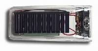
Назначение: Подзарядка аккумулятора мобильного телефона.
Описание:
- Единая конструкция аккумулятора и фотоэлементов.
- Добавляют ко времени разговора до 15 (в среднем 6) минут на каждый час зарядки.
- Выпускаются для телефонов Nokia, Motorola, Samsung и Nextel.
- Обеспечивает поддержание заряда сотового телефона в режиме ожидания.
- Цена от 40 до 60$
Вывод: Специализированная маломощная конструкция, пригодная только для подпитки сотового телефона.
Солнечные батареи Brunton Solarport 4.4
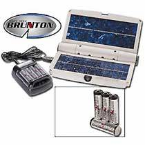
Назначение: Питание цифровых камер, сотовых телефонов и навигаторов GPS, зарядка аккумуляторов.
Описание:
- Мощность солнечной батареи до 4.4Вт.
- В комплекте 6-метровый кабель с набором переходников, 12-вольтовый разъем автомобильного прикуривателя, разъем порта USB
- В комплекте также зарядное устройство для 4х NiCd-NiMh аккумулятора типа AA или AAA
- Размеры 235x152x38 мм.
- Вес 540 г.
- Цена 100$.
Вывод: Достаточно мощное устройство. Неплохая комплектация
Зарядное устройство на солнечных батареях. (Sun Catcher Sport)
Интернет магазин
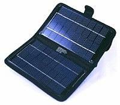
Назначение: зарядка телефонов, КПК, плееров и фотокамер и т.д.
Описание:
- Встроенный 12В NiCd-NiMh аккумулятор для работы без солнца.
- Имеется выходной разъем прикуривателя.
- Пиковая выходная мощность (с использованием аккумулятора) — 4.2Вт.
- размеры - 21 х 12,7 х 3,8 см
- Вес 430 гр.
- Нейлоновый чехол.
- Цена 145$ с доставкой в течение 20 рабочих дней.
Вывод: Наличие буферного аккумулятора. Небольшой вес и габариты. Высокая цена, долгая доставка.
Solar Charger
Интернет-магазин .
Зарядное устройство на солнечных батареях.
(Без фото)
Назначение: Питание и зарядка аккумуляторов различной портативной техники, MP3-плейеров, PDA, ноутбуков и сотовых телефонов.
Описание (как представлено на сайте):
- Габариты новинки не больше обычной VHS-кассеты.
- Вес менее 350 г.
- В комплект к "солнечному заряднику" прилагаются семь стандартных переходников.
- Мощность зарядника можно наращивать, подключая совместно несколько таких устройств
- Цена 70$
Вывод: Хорошая комплектация. Малая мощность за эту цену.
Violetta Solargear
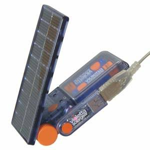
Назначение: Зарядка 2х NiCd-NiMh аккумуляторов, либо питание маломощных потребителей.
Описание:
- Встроенные гнезда для двух NiCd-NiMh аккумуляторов, которые могут питать потребителей при отсутствии солнца.
- Максимальная мощность (приблизительно) 1.3Вт.
- Выход USB в спецпереходнике.
- При заказе можно выбрать комплектацию разъемов под свою марку телефона, КПК и т.д.
- Размер: 57.5x122.0x27.0мм. Вес: 0.13 гр.
- Комплектность: сол.бат., один кабель на выбор, 4АА аккумулятора, USB адаптер.
- Цена 110$.
Вывод: Плюс — при покупке можно выбрать переходник для своего устройства. Высокая цена при низкой мощности.
Зарядное устройство на солнечной батарее B222 (США)
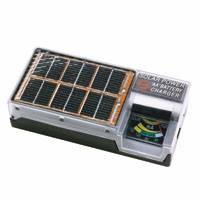
Назначение: Зарядка пальчиковых NiCd-NiMh аккумуляторов.
Описание:
- Заряжает NiCd-NiMh аккумуляторы размера АА.
- Батарейный отсек на 4 аккумулятора.
- Без встроенной электроники (только защитный диод для исключения саморазряда в темноте), контроль тока по стрелочному индикатору.
- Максимальная мощность 0.4Вт.
- Защита от дождя.
- Габариты 6х10 см, масса 113 г
- Цена: 26.4$.
Вывод: Защита от дождя. Мизерная выходная мощность.
Солнечные батареи Silva BatterySaver Powerpak
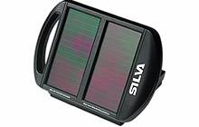
Назначение: Универсальная маломощная солнечная батарея.
Описание:
- Может заряжать 4 AA аккумулятора.
- Адаптер 12 В для зарядки мобильного телефона, PDA и т.д.
- Поддержание автомобильного аккумулятора.
- Наклонная панель.
- Максимальный ток на выходе: 12V 70мA или 6V 140мА (0.84 Ватта).
- Цена 55$.
Вывод: Маломощная солнечная панель без электроники (только диод).
Солнечные батареи iSun® (iSun® Sport)
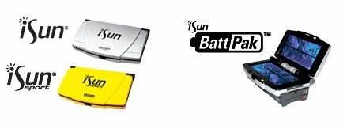
Назначение: Портативное устройство для зарядки и питания широкого круга портативной электроники.
Описание
- Возможность подключения дополнительного аккумулятора, для питания в темное время.
- Выходная мощность 2.2Вт.
- Выходное напряжение 7.6В (15.2В).
- Размеры 184x114x32 мм.
- Масса 0.311 кг.
- Комплектация: 12-вольтовый разъем подключения к прикуривателю, 7 переходников для разных типов электронных устройств.
- Цена (мелкооптовая, без дополнительного аккумулятора) 72$.
Вывод: Солнечная батарея без электроники, удобная для похода конструкция, малый вес, возможность использования буферного аккумулятора, но высокая цена.
Складное зарядное устройство Coleman Exponent Flex 5 Watt.
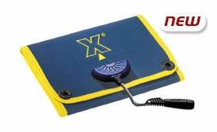
Назначение Зарядка и питания портативной электроники.
Описание:
- Мощность до 5 Вт.
- Максимальный ток 300 мА при напряжении 16.5 В.
- Температурный диапазон -40°С +60°С.
- Цена (мелкооптовая) 125$.
Вывод: Гибкая солнечная панель без электроники. Высокая цена.
Солнечная панель Battery Saver Pro 5 Watt
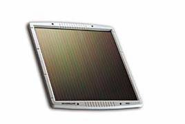
Назначение: Подзарядка 12В аккумуляторов. Питание различных устройств.
Описание:
- Мощность до 5 Вт.
- Пиковая отдача 350 mА при 15 В.
- Размеры 330x330x25 мм.
- Масса 1.5 кг.
- Температурный диапазон: -40˚C +80˚C.
- Цена (мелкооптовая) 90$.
Вывод: Солнечная панель без какой-либо электроники. В походе неудобна из-за нескладывающейся конструкции. Высокая цена.
Солнечное зарядное устройство СЗУ2-БСА-7.5
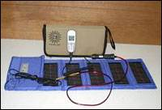
Назначение: Универсальная солнечная батарея. Основное назначение — для питания мобильных терминалов спутниковой связи Глобалстар и/или подзарядки аккумуляторных батарей.
Описание:
- Зарядка свинцовых аккумуляторов (12 В).
- Зарядки всех видов мобильных радиотелефонов через автомобильные адаптеры.
- Электропитания устройств, в конструкции которых присутствует аккумулятор (видеокамер, ноутбуков, цифровых фотоаппаратов и т.д.).
- Напряжение на выходе ЗУ от СБ: 14,2±0,2 В.
- Максимальный ток на выходе ЗУ от СБ: 0.5 А.
- Диапазон рабочих температур: от -30°С до +40°С.
- Вес: 1,1 кг.
- Габариты: 1640х230х3 мм (в рабочем состоянии), 340х155х50 мм (в пенале).
- Комплект поставки: Солнечная батарея, Зарядное устройство (2В, 3А), Шнуры соединительные 4шт., пенал.
- Цена 193$.
Вывод: Достаточно мощная солнечная батарея без электроники, складная конструкция, полезна будет для группы, для одного человека избыточна. Да и цена не самая маленькая.
Солнечное зарядное устройство СЗУ2-БСА-15У
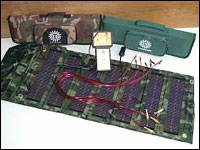
Назначение: Универсальная солнечная батарея. Основное назначение — для питания мобильных терминалов спутниковой связи Глобалстар и/или подзарядки аккумуляторных батарей.
Описание:
- зарядка свинцовых аккумуляторов (12 В).
- зарядки всех видов мобильных радиотелефонов через автомобильные адаптеры.
- электропитания устройств, в конструкции которых присутствует аккумулятор (видеокамер, ноутбуков, цифровых фотоаппаратов и т.д.).
- Напряжение на выходе ЗУ от СБ: 14,2±0,2 В.
- Максимальный ток на выходе ЗУ от СБ: 1 А.
- Диапазон рабочих температур: от -30°С до +40°С.
- Вес: 1.4 кг.
- Габариты: 1640х400х3мм (в рабочем состоянии), 490х220х50мм (в пенале).
- Комплект поставки: Солнечная батарея, Зарядное устройство (2В, 3А), Шнуры соединительные 4шт., пенал.
- Цена 288$.
Вывод: Солнечная батарея без электроники, достаточно мощная, складной конструкции. Несколько великовата по размерам и весу для одного человека, но на группу, особенно при малой ее мобильности может быть полезна при наличии мощных потребителей. Высокая цена.
Солнечная батарея Макси 12 для спутниковых телефонов
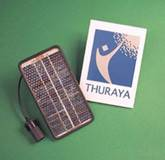
Назначение Зарядка мобильных спутниковых телефонов.
Описание:
- Выходное напряжение 12В.
- Выход прикуривателя.
- Сила тока 200-300 мA (Выходная мощность до 3.6Вт).
- Размеры 115x215x9мм, вес 270гр.
- Пластиковый корпус, сумка для переноски.
- Цена 220$.
Вывод: Компактная солнечная батарея без электроники. Главный минус — цена.
Solar Set
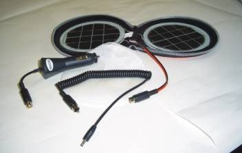
Назначение: Универсальная солнечная батарея.
Описание:
- Выходное напряжение до 4.8В.
- Максимальная выходная мощность (приблизительно) 2Ватта.
- Цена 50$.
Вывод: Солнечная батарея без электроники. Малая мощность при относительно высокой цене.
Solar Note
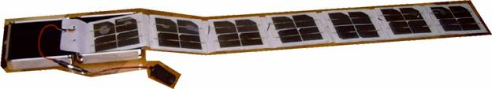
Назначение: Универсальная солнечная батарея. Для зарядки аккумуляторов ноутбуков, видеокамер и другой портативной техники.
Описание:
- Максимальная выходная мощность (приблизительно) 14 Ватт.
- Цена 150$.
Вывод: Солнечная батарея без электроники. Складная компактная конструкция.
Солнечное зарядное устройство SCD-3
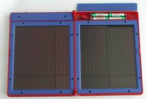
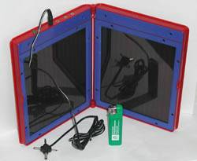
Назначение: Зарядка в полевых условиях CD-плеера, сотового телефона, маломощной радиостанции, GPS-приемника/навигатора, видеокамеры и т.д.
Описание:
- Максимальная выходная мощность (приблизительно) 5.5Вт.
- Встроенный батарейный отсек на 4-х аккумулятора типа ААА.
- 2 переходных кабеля в комплекте.
- Выходные напряжения 3.6 В; 6 В; 9 В; 12 В.
- Рабочая температура -40 +90°С.
- Размеры (в сложенном состоянии) 228x172x34 мм.
- Цена 80$.
Вывод: Аккуратно сделанная солнечная батарея без электроники, за приемлемую цену.
Складная конструкция несомненный плюс при транспортировке. Несколько выходных напряжений.
Солнечная батарея со встроенным зарядным устройством
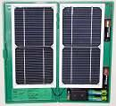
Назначение: Ускоренная зарядка NiCd-NiMh аккумуляторов. Питание внешних устройств стабилизированным выходным напряжением от 5В до 14В, при использовании преобразователя напряжения, поставляемого отдельно.
Описание:
- Выходная мощность 5 Вт. (при выходном напряжении 2В и токе 2.5А).
- Встроенный электронный зарядник для ускоренной зарядки аккумуляторов.
- Независимо заряжает два NiCd-NiMh аккумулятора размера АА.
- Зарядка 2х аккумуляторов по 1000мАч за 1,5 часа.
- Габариты в сложенном состоянии 280х145х25мм. Вес 700г.
- Жесткий пластиковый корпус.
- Рабочая температура солнечной батареи -10 +50°С.
- Цена 50$.
Вывод: Большая мощность, встроенный зарядник, небольшая цена, возможность получения стабилизированного выходного напряжения от 5 до 14В, как на солнце, так и в темноте (от буферного аккумулятора).
Солнечная батарея 10Вт (складная)
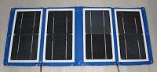
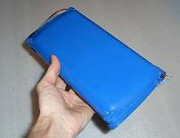
Назначение: Солнечная батарея предназначена для работы с зарядным устройством NiCd-NiMh аккумуляторов. Возможно подключение преобразователя напряжения, представленного на сайте, при этом получаеется стабилизированный солнечный блок питания с выходным регулируемым напряжением от 4.7В до 14.5В. Возможно питание других внешних.
Описание:
- Выходная мощность 10 Вт. (при выходном напряжении 4В и токе 2.5А).
- Габариты в сложенном состоянии 250х125х45мм. Вес 500г.
- Рабочая температура солнечной батареи -10 +50°С.
- Цена 78$.
Вывод: Большая мощность, небольшая цена.
Солнечные панели в интернет магазине
(Без фото)
Солнечная батарея"SOLAR" 12В/400мА.
- Выходной ток 400 мА при 12 вольт.
- Мощность 4.8 Вт.
- Цена: 50$.
Солнечная батарея"SOLAR" 6В/350мА.
- Выходной ток 350 мА при 6 вольт.
- Мощность 2.1 Вт.
- Размер 320х105х3 мм.
- Цена: 16$.
Вывод: Солнечные панели без электроники. Не складываются, что неудобно для похода.
Солнечная панель EK-Solar 6Vx400
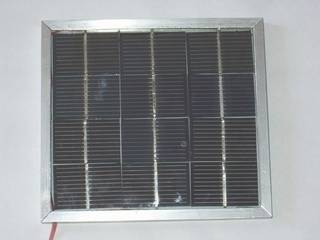
Назначение: Зарядка аккумуляторов, питание маломощных потребителей.
Описание
- Максимальная мощность 2Вт.
- Рабочее выходное напряжение 5.7В.
- Рабочий выходной ток 0,35А.
- Вес батареи 550 г.
- Размеры 174x158х12мм.
- Цена 19.5$.
Вывод: Солнечная панель за приемлемую цену. Благодаря небольшим размерам может быть использована в походе, хотя и не складная.
Солнечные модули ООО "НПЦ завода "Красное знамя" (Рязань)
ФСМ-10-12 (модуль минимальной мощности из предлагаемых).
Назначение: Батарея фотоэлементов для питания различных потребителей нестабилизированным напряжением.
Описание:
- Номинальное напряжение 12В.
- Максимальная мощность 10Вт.
- Ток максимальной мощности 0.69А.
- Напряжение максимальной мощности 17В.
- Габариты 382х345х28 мм.
- Вес 1.4 кг.
- Цена 64$.
Вывод: Солнечная батарея без электроники. Большая мощность, за приемлемую цену, встроенный диод, минус — не складывается.
Солнечная батарея для зарядки сотового телефона
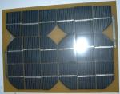
Назначение: Солнечная батарея для зарядки мобильных телефонов и питания других маломощных потребителей нестабилизированным напряжением.
Описание:
- Фотопластины заламинированы на текстолите для снижения веса.
- Номинальное напряжение 6В.
- Максимальная мощность 6Вт.
- Ток максимальный 0.7А.
- Габариты 292x222x8 мм.
- Цена 42$.
Вывод: Солнечная батарея без электроники. Малый вес, приемлемая цена, минус — не складывается.
Выводы
Основным фактором, ограничивающим широкое использование солнечных фотобатарей, является их высокая цена. Посмотрим с этой точки зрения на представленные выше устройства, для удобства, сведя данные о них в таблицу. Последняя колонка в таблице показывает стоимость одного Ватта вырабатываемой энергии для конечного пользователя (меньше — лучше).
|
Наименование |
Особенности |
Дополнит. Электроника |
Мощ-ность [Ватт] |
Цена [$] |
Цена за 1Вт [$/Ватт] |
|
Brunton Solarport 4.4 |
Хорошая комплектация разъемами. |
Зарядник для аккумуляторов. |
4.4 |
100 |
22.7 |
|
Sun Catcher Sport |
Небольшой вес и габариты |
Встроенный буферный аккумулятор. |
4.2 |
145 |
34.5 |
|
Violetta Solargear |
Небольшой вес и габариты |
Место для зарядки аккумуляторов, USB адаптер. |
1.3 |
110 |
84.6 |
|
Зарядное устройство B222 |
Только для зарядки аккумуляторов. Защита от дождя. |
Стрелочный индикатор тока зарядки. |
0.4 |
26.4 |
66.0 |
|
Silva BatterySaver Powerpak |
Солнечная панель. Есть отсеки для зарядки аккумуляторов размера АА. |
Диод |
0.84 |
55 |
65.5 |
|
iSun® |
Складная солнечная батарея. Жесткий корпус. |
Возможна покупка и подключение внешнего буферного аккумулятора. |
2.2 |
72* |
32.7 |
|
Coleman Exponent Flex 5 Watt |
Гибкая солнечная панель. |
Нет |
5 |
125* |
25.0 |
|
Battery Saver Pro 5 Watt |
Солнечная панель. |
Нет |
5 |
90* |
18.0 |
|
СЗУ2-БСА-7.5 |
Складная солнечная батарея. Мягкий чехол. Хорошая комплектация. |
Нет |
7.5 |
193 |
25.7 |
|
СЗУ2-БСА-15У |
Складная солнечная батарея. Мягкий чехол. Хорошая комплектация. |
Нет |
15 |
288 |
19.2 |
|
Макси 12 |
Солнечная панель. |
Нет |
3.6 |
220 |
61.1 |
|
Solar Set |
Складная солнечная батарея. Мягкий чехол. |
Нет |
2 |
50 |
25.0 |
|
Solar Note |
Складная солнечная батарея. Жесткий корпус. |
Нет |
14 |
150 |
10.7 |
|
SCD-3 |
Складная солнечная батарея. Жесткий корпус. Несколько выходных напряжений. |
Диод |
5.5 |
80 |
14.5 |
|
Солнечная батарея со встроенным зарядником |
Складная солнечная батарея. Жесткий корпус. |
Зарядник для аккумуляторов, Опционально — импульсный стабилизатор выходного напряжения с буферным аккумулятором. |
5 |
50 |
10.0 |
|
Солнечная батарея 10Вт (складная) |
Высокая мощность. Складная конструкция |
Нет. Опционально зарядник для NiCd-NiMh аккумуляторов, импульсный стабилизатор выходного напряжения с буферным аккумулятором. |
10 |
78 |
7.8 |
|
Солнечная батарея»SOLAR» |
Солнечная панель. |
Нет |
4.8 |
50 |
10.4 |
|
Солнечная панель EK-Solar 6Vx400 |
Солнечная панель. |
Нет |
2 |
19.5 |
9.8 |
|
ФСМ-10-12 |
Солнечная панель. |
Диод |
10 |
64 |
6.4 |
|
Солнечная батарея для зарядки сотового телефона |
Солнечная панель. |
Нет |
6 |
42 |
7 |
* — цена мелкооптовая.
Заключение
Как видно из примеров, средняя цена одного Ватта мощности у импортных приборов приблизительно в два и более раз выше, чем у отечественных. С точки зрения дизайна, импортные устройства, несомненно, выигрывают, но так ли он важен в походных условиях — решать покупателю.
Заканчивая эту статью, отмечу то, что сегодня за вполне приемлемую цену можно вполне обеспечить себя электропитанием в походе, используя энергию Солнца. Выбор устройств для этого достаточно широк и они становятся все более удобными для конечного потребителя. Электроника также повышает удобство пользования такими приборами, придавая им большую гибкость и универсальность, улучшая технические характеристики.
Автор: Николай Носов